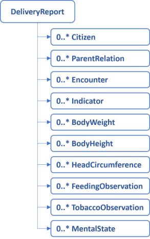

This page is part of the KLChildren (v1.0.0: Release) based on FHIR R4. This is the current published version in its permanent home (it will always be available at this URL). For a full list of available versions, see the Directory of published versions
Home
Official URL: http://fhir.kl.dk/children/ImplementationGuide/kl.dk.fhir.children
This implementation guide describes the delivery of children health data to KL Gateway. The data originates from the documantation made by health nurses (sundhedsplejersker) in the Danish municipalities.The reporting aims for compliance with the Danish core profiles and the current work on a shared information model (FKI) for data in the Danish municipalities.
The profiles for the reporting are restricted to allow only the information that is required to report to the KL Gateway.
Overview
The data is reported as a collection of instances. A report may contain instances that conforms to the profiles defined in this implementation guide. See figure below.

Special constraints, and resulting reporting practises
Whereas the report may seem unconstrained, each profile define constraints on attributes, datatypes and cardinalities. In addition, extra constraints are implemented to accomodate the rules of reporting data to The National Child Health Register, see guidance. Extra constraints are as follows:
Tobacco exposure should be reported, at the visit known as ‘Etableringsbesøg’
Length/Height and weight should be reported, at the visits/encounters known as ‘Andet besøg i barnets første levemåned’, ‘Besøg ved det 4-6 måneder gamle barn’, ‘indskolingsundersøgelse’ and’udskolingsundersøgelse’
The applied rules mean that an observation without a value must be reported if one of the menitioned encounters are completed without the data being obtained, and an appropriate dataAbsentReason must be given. In addition, the correct encounter-type must be applied, for the rules to take effect correctly. See more in the descriptions below and in the Enconter-profile
Citizen
Information about the citizens that are the subjects of the report. This resource is used to get a reference to the child. However, sometimes a report holds data about the child’s parents. To ensure that this data goes into the parent’s record, the data should be related to the parent represented as a citizen. Citizen and relatedPerson resources for the parents should only be included when and if, they are relevant for the child’s report.
Attributes
civil registration number (CPR-nr)
identification of the municipality holding and reporting the data
a reference to ParentRelation that holds additional information about the citizen’s children.
Validation
One and only one civil registration number exists, and is a syntactically valid CPR-nr
One and only one managing organization exitis, and is a syntactically valid SOR code (only code length is currently validated in the profile, but the authorization validates the actual SOR code)
One reference to ParentRelation may exist
ParentRelation
Information about the relationship between a child and its parents. Citizen and relatedPerson resources for the parents should only be included when and if, they are relevant for the child’s report.
Attributes
a reference to the Citizen instance that holds the child’s information
a relationship type that states that this is a ‘parent’-relationship.
Validation
one and only one reference to the Citizen exists
one and only one relationship type exists, and the value is fixed to ‘PRN’ for parent.
Encounter
Information about when a child with or without family members meet the health nurse (sundhedsplejerske) in a Danish municipality context.
Attributes
Type of encounter. The attribute describe which health nurse visit/enconter is deliverd using a code.
Encounter class. The attriute holds a code which describe the place of delivery e.g. home visit or ambulatory.
The encounter start-time
The encounter end-time
A reference to the Citizen instance that holds the child’s information
A FHIR status atrribute
Validation
One and only one encounter-type exists, and should be drawn from a specific ValueSet, no other codes may be reported.
One ond only one encounter class exists, and should be drawn from the standard FHIR-ValueSet
One and only one encounter start-time exists
One encounter start-time may exist
One and only one reference to the Citizen exists
One and only one FHIR status exists, and should be drawn from the standard FHIR-ValueSet
Indicator
A simple form of observation where a whole area of concern is evaluated.
Attributes
Code that describe the kind of indicator
Value that describes whether a concern is present or not (bemærkning eller ingen bemærkninger)
A reference to the Citizen instance that holds either the parents or the child’s information
A reference to the Encounter in which the indicator have been evaluated
The time of the evaluation
A dataAbsentReason, which is a possiblity to describe why data is absent
A FHIR status attribute
Validation
One and only one code exists to describe the kind of indicator. It should be drawn from a specific ValueSet, no other codes may be reported.
One value may exist. It should be drawn from a specific ValueSet, no other codes may be reported.
One and only one reference to the Citizen exists
A reference to an Encounter may exist
The time of the evaluation is mandatory
DataAbsentReason is possible when the value is absent, and should be drawn from the standard FHIR ValueSet
One and only one FHIR status exists, and should be drawn from the standard FHIR-ValueSet
BodyWeight
A child’s weight
Attributes
A category that is used for commonly used vital-signs observations internationally
Two codes that describes that this is a weigth observable
A value that describes how much the child weighs
A dataAbsentReason, which makes it possible to describe why data is absent
An observation-time
A reference to the Citizen instance that holds the child’s information
A reference to the Encounter in which the observation occured
A FHIR status attribute
Validation
The category should be present, and fixed to a specific code
The two weight codes should be present, and fixed to a specific LOINC and SNOMED CT code respectively
The value should be given as a decimal point in grams, and the UCUM-unit is applied
One dataAbsentReason is mandatory if the value is empty
The time is mandatory
One and only one reference to the Citizen exists
A reference to an Encounter may exist
One and only one FHIR status exists, and should be drawn from the standard FHIR-ValueSet
BodyHeight
A child’s length/height
Attributes
A category that is used for commonly used vital-signs observations internationally
Two codes that describes that this is a height/length observable
A value that describes how long/tall the child is
A dataAbsentReason, which makes it possible to describe why data is absent
An observation-time
A reference to the Citizen instance that holds the child’s information
A reference to the Encounter in which the observation occured
A FHIR status attribute
Validation
The category should be present, and fixed to a specific code
The two weight codes should be present. One is a fixed LOINC code. The other is either a SNOMED CT length or a SNOMED CT height code.
The value should be given as an integer in cm, and the UCUM-unit is applied
One dataAbsentReason is mandatory if the value is empty
The time is mandatory
One and only one reference to the Citizen exists
A reference to an Encounter may exist
One and only one FHIR status exists, and should be drawn from the standard FHIR-ValueSet
HeadCircumference
The child’s head circumference
Attributes
A category that is used for commonly used vital-signs observations internationally
Two codes that describes that this is a head circumference observable
A value that describes the child’s head circumference
A dataAbsentReason, which makes it possible to describe why data is absent
An observation-time
A reference to the Citizen instance that holds the child’s information
A reference to the Encounter in which the observation occured
A FHIR status attribute
Validation
The category should be present, and fixed to a specific code
The two observation codes should be present, and fixed to a specific LOINC and SNOMED CT code respectively
The value should be given as a decimal point in cm, and the UCUM-unit is applied
One dataAbsentReason is possible if the value is empty
The time is mandatory
One and only one reference to the Citizen exists
A reference to an Encounter may exist
One and only one FHIR status exists, and should be drawn from the standard FHIR-ValueSet
FeedingObservation
Information about how small children are fed. It is used for observations of a childs breastfeeding.
Attributes
One codes that describes that this is a feeding observation
A value that describes what feeding method the observation is about
A dataAbsentReason, which makes it possible to describe why data is absent
An observation period in which the feeding method is used.
A reference to the Citizen instance that holds the child’s information
A reference to the Encounter in which the observation occured
A FHIR status attributeFHIR-ValueSet
Validation
The observation code should be present, and fixed to a specific SNOMED CT code
One value may exist. It should be drawn from a specific ValueSet, no other codes may be reported.
One dataAbsentReason is possible if the value is empty
The period start and end is mandatory, unless you give a date for when breastfeeding was stopped, then it is only one date.
One and only one reference to the Citizen exists
A reference to an Encounter may exist
One and only one FHIR status exists, and should be drawn from the standard FHIR-ValueSet
TobaccoObservation
Information about small childrens’ exposue to tobacco, and teenagers’ tocacco use.
Attributes
One codes that describes that this is a tobacco observation
A value that describes the actual exposure or use using a code.
A dataAbsentReason, which makes it possible to describe why data is absent
An observation-time
A reference to the Citizen instance that holds the child’s information
A reference to the Encounter in which the observation occured
A FHIR status attributeFHIR-ValueSet
Validation
The observation code should be present, and fixed to a specific SNOMED CT code
One value may exist. It should be drawn from a specific ValueSet, no other codes may be reported.
One dataAbsentReason is possible if the value is empty
The observation-time is mandatory
One and only one reference to the Citizen exists
A reference to an Encounter may exist
One and only one FHIR status exists, and should be drawn from the standard FHIR-ValueSet
MentalState
Information about how children in school self-report that they thrive.
Attributes
One codes that describes that this is an observation about how the child thrives
A value which is a code that describes how the child rated how happy they are in general or at school
A dataAbsentReason, which makes it possible to describe why data is absent
An observation-time
A reference to the Citizen instance that holds the child’s information
A reference to the Encounter in which the observation occured
A FHIR status attributeFHIR-ValueSet
Validation
The observation code should be present, and fixed to a specific SNOMED CT code
One value may exist. It should be drawn from a specific ValueSet, no other codes may be reported.
One dataAbsentReason is possible if the value is empty
The observation-time is mandatory
One and only one reference to the Citizen exists
A reference to an Encounter may exist
One and only one FHIR status exists, and should be drawn from the standard FHIR-ValueSet
This IG defines the global extensions - the ones defined for everyone. These extensions are always in scope wherever FHIR is being used (built Sun, Mar 26, 2023 08:46+1100+11:00)
Package hl7.fhir.dk.core#2.1.0
A FHIR Implementation Guide for the Danish common needs across healthcare sectors (built Tue, Nov 8, 2022 22:28+0100+01:00)
This publication includes IP covered under the following statements.
The UCUM codes, UCUM table (regardless of format), and UCUM Specification are copyright 1999-2009, Regenstrief Institute, Inc. and the Unified Codes for Units of Measures (UCUM) Organization. All rights reserved. https://ucum.org/trac/wiki/TermsOfUse
This material contains content that is copyright of SNOMED International. Implementers of these specifications must have the appropriate SNOMED CT Affiliate license - for more information contact https://www.snomed.org/get-snomed or info@snomed.org.

 KLChildren
KLChildren